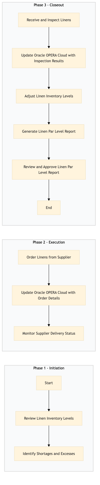

| Role | Steps |
|---|---|
| Executive Housekeeper | 1.1 1.2 3.1 3.2 3.3 3.4 3.5 |
| Procurement Manager | 2.1 2.2 2.3 |
| Housekeeping Supervisor | 3.1 3.2 |
| Step | Name | Role | System | Input | Output | KPI | Dec? | Exc? | Pain Point / Risk |
|---|---|---|---|---|---|---|---|---|---|
| 1.1 | Review Linen Inventory Levels | Executive Housekeeper | Oracle OPERA Cloud | Linen inventory report from Oracle OPERA Cloud | Updated linen inventory levels | Completion within 15 minutes | N | Y | Inaccurate inventory data leading to over/understocking |
| 1.2 | Identify Shortages and Excesses | Executive Housekeeper | Oracle OPERA Cloud | Updated linen inventory levels | Linen shortage/excess report | Completion within 10 minutes | N | Y | Manual data entry errors affecting accuracy |
| 2.1 | Order Linens from Supplier | Procurement Manager | Birchstreet Procurement | Linen shortage report | Supplier order confirmation | Completion within 30 minutes | N | Y | Supplier delays or stockouts |
| 2.2 | Update Oracle OPERA Cloud with Order Details | Procurement Manager | Oracle OPERA Cloud | Supplier order confirmation | Updated inventory record in Oracle OPERA Cloud | Completion within 10 minutes | N | Y | Data synchronization issues between systems |
| 2.3 | Monitor Supplier Delivery Status | Procurement Manager | Birchstreet Procurement | Supplier order confirmation | Delivery status update | Completion within 5 minutes | N | Y | Delayed deliveries affecting inventory levels |
| 3.1 | Receive and Inspect Linens | Housekeeping Supervisor | Oracle OPERA Cloud | Delivered linens | Inspection report | Completion within 20 minutes per delivery | Y | Y | Damaged or incorrect items received |
| 3.2 | Update Oracle OPERA Cloud with Inspection Results | Housekeeping Supervisor | Oracle OPERA Cloud | Inspection report | Updated inventory record in Oracle OPERA Cloud | Completion within 10 minutes | N | Y | Data entry errors affecting inventory accuracy |
| 3.3 | Adjust Linen Inventory Levels | Executive Housekeeper | Oracle OPERA Cloud | Inspection report | Adjusted linen inventory levels | Completion within 15 minutes | N | Y | Manual adjustments leading to errors |
| 3.4 | Generate Linen Par Level Report | Executive Housekeeper | Oracle OPERA Cloud | Adjusted linen inventory levels | Linen par level report | Completion within 10 minutes | N | Y | Report generation issues affecting decision-making |
| 3.5 | Review and Approve Linen Par Level Report | Executive Housekeeper | Oracle OPERA Cloud | Linen par level report | Approved linen par level report | Completion within 5 minutes | N | Y | Approval delays affecting operational planning |
HK-LP-07 is a process to manage linen par levels in full-service Marriott hotels, ensuring optimal inventory levels and efficient laundry operations.